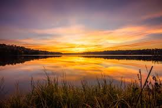
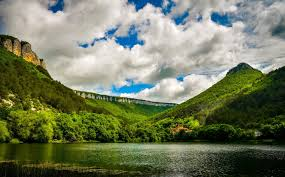
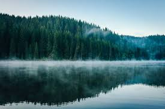
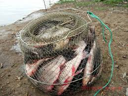
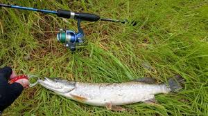

Вступ
Риболовля – це не просто хобі для мене, це спосіб релаксації, з'єднання з природою та відмінний спосіб провести свій вільний час.
Мої улюблені місця
Понад усе полюбляю рибалку на озерах, бо вони часто вражають своєю красою та спокоєм, дарують можливість ловити різні види риби.Озера часто обладнані зонами для відпочинку та пікніків.
Риболовельні трюки та поради
Рибалка - це мистецтво, яке поєднує в собі вміння та вдачу. Ось кілька порад, які можуть полегшити ваш рибацький досвід на озерах:
- Вивчайте місцевість
- Правильне спорядження
- Використовуйте природні приманки
- Краще риболовити у ранкові та вечірні години
- Терпіння та витримка
Також багато корисних порад можна знайти тут
Великий вибір спорядження як для новачків так і для професіоналів у магазині flagman
Фотогалерея
Перегляньте мої найкращі моменти з риболовлі. Красиві краєвиди та вражаючі трофеї.
    Зв'язок
Я завжди готовий обмінюватися досвідом та історіями. Не соромтеся зв'язатися зі мною напряму. І я вірю, що разом ми можемо покращувати наше улюблене хобі.
Написати мені